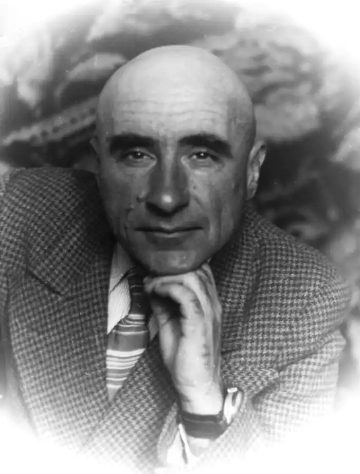
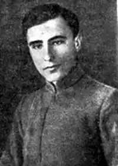
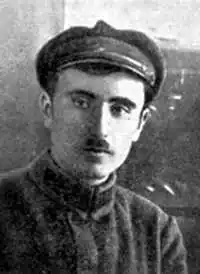

Олесь Донченко — загублений талант двадцятих років. Поет і прозаїк, якому роздавали чи не найбільше компліментів серед молоді й пророкували блискуче майбутнє, помер у провінції, пописуючи твори для дітей.
Народився Донченко 1902 року в містечку Великі Сорочинці на Полтавщині. Дитинство пройшло в селі Багачка Перша, де вчителював батько. Коли хлопцеві виповнилося десять років, сім’я перебралася до Лубен. Там Олесь вступив до гімназії, де його як учительського сина звільнили від плати за навчання. Гімназія багато дала майбутньому письменнику. Тут він почав писати вірші російською мовою, і хоча до збірки "Кружок поэтов", яку активні лубенські школярі видали 1917 року, вони ще не потрапили, та вже наступного року Донченко дебютував із віршем "Журлива пісня" на сторінках місцевої газети "Рідний край".
Гімназію Донченко закінчував 1920 року вже в радянській Україні, де катастрофічно бракувало освічених людей. Лубенський відділ позашкільної освіти негайно відрядив вісімнадцятирічного юнака вчителем у село Остапівку на Лубенщині. Через два роки він повернувся до повітцентру, працював журналістом у газеті "Зарево", згодом перейменованій на "Червону Лубенщину". У березні 1924 року комсомольця Донченка забрали в Червону армію, в Першу Червонокозачу кавалерійську дивізію. Служив спершу червоним козаком, тобто кіннотником, потім полковим навчителем. В автобіографії він писав: "Окремі сторінки повісті "Золотий павучок", де подано побутові малюнки з життя червоної кінноти, автор взяв "з натури" саме з цього перебування свого в армії". У жовтні 1926-го Донченко демобілізувався, перебрався до Харкова і пішов працювати в сектор юнацької літератури Державного видавництва України. З 1922 року він друкувався в столичній пресі, вступив до Спілки селянських письменників "Плуг" (інших літорганізацій тоді ще не було). Поки Донченко служив у війську, видавництво довго й нудно готувало його першу збірку віршів "Червона писанка" (1926), тож коли вона вийшла, молодий поет готовий був зректися частини творів. Згодом вийшла його друга й остання збірка віршів "Околиці" (1928). Наступного 1927 року під покровительством ЦК ЛКСМУ виникла комсомольська письменницька організація "Молодняк". Вона почала видавати однойменний журнал. Із її діяльністю пов’язано найцікавіший період у творчості Донченка. У "Молодняку" друкується, а потім виходить окремим виданням його перша п’єса "Комсомольська глушина" (1927), а прозовою родзинкою першого сезону журналу стала його повість "Золотий павучок", яка викликала цілі дискусії в газеті "Комсомолець України". 1928 року повість вийшла окремим виданням, 1929-го її перевидали так само п’ятитисячним накладом (плюс оповідання "Сурми"), однак автора накрила хвиля злої критики. Одні назви статей чого варті: "В шуканнях ухилів" Івана Момота, "Ату його!" — відповідь Донченка Момотові, "Де опортунізм і де халтура" Андрія Клоччі, "Біологія над усе!" Леоніда Смілянського. І хоча Іван Багмут назвав Донченка однією з найвидатніших фігур серед початківців, це не рятувало. Письменника, який наважився порушити питання любові й сексу в житті комсомольців, звинуватили в порнографії. Остання його "доросла" повість "Дим над яругами" вийшла 1929 року, коли й перевидання "Золотого павучка". Тоді ж таки, 1930 року, Донченко перейшов із "Молодняка" до "Пролітфронту", що його зорганізував Микола Хвильовий. То був зухвалий і помітний демарш десятка найкращих комсомольських письменників. Та "Пролітфронт" проіснував менше року, в січні 1931-го організація саморозпустилася. Більшість молодняківців перейшли до антиподів — ВУСПП. На цьому закінчився письменник Олесь Донченко. Ні, він іще писав: і "технічну повість" "Міцний ґрунт" (1936), і роман "Море відступає" (1934) про нафтові промисли, і повість "Шахта в степу" (1949), й іншу макулатуру. Від початку 1930-х років Донченко відходить у дитячу літературу, яка йому особливо вдається: робота у школі і в юнсекторі ДВУ пішла йому на користь. Отож дедалі частіше, а потім уже всуціль, на його книжках зазначають, для якого вони шкільного віку — молодшого, середнього чи старшого. Донченко написав понад сотню книжок для дітей, а ще він автор сценарію до одного з перших українських мультфільмів "Тук-тук та його приятель Жук" (1935). Війну Донченко провів в евакуації в Казахстані, повернувся до Харкова, а згодом узагалі перебрався в рідні Лубни, де й помер навесні 1954-го, маючи лише 52 роки. Протягом 1957—1958 років видавництво ЦКЛКСМУ "Молодь" (колишній "Молодий більшовик") випустило шеститомне зібрання його творів, до якого ввійшли тільки твори для дітей: там немає ні "Золотого павучка", ні "Диму над яругами". Студенти філфаків вивчають творчість письменника лише в курсі "Українська радянська література для дітей".